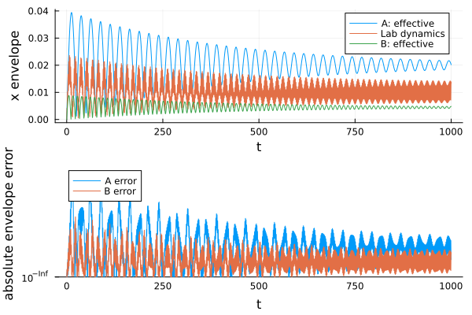

Counting pump photons: a mean-field comparison
This example follows the Floquet expansion by counting pump photons described in (Seibold et al., 2025).
using FloquetExpansionsh_a = FockSpace(:cavity)@qnumbers a::Destroy(h_a)@variables ω₀::Real ω::Real α::Real F::Real γ::Real@variables t::Realx_a = (a + a') / sqrt(2 * ω₀)p_a = im * sqrt(ω₀ / 2) * (a' - a)function duffing_hamiltonian(x, p) return p^2 // 2 + ω₀^2 * x^2 // 2 + α * x^4 // 4 - F * x * exponential_form(cos(ω * t))endduffing = duffing_hamiltonian(x_a, p_a)\[\frac{\frac{1}{4} ~ \left( \frac{1}{\sqrt{2 ~ \mathtt{\omega_0}} ~ \mathtt{\omega_0}} + \frac{1}{2 ~ \sqrt{2 ~ \mathtt{\omega_0}} ~ \mathtt{\omega_0}} \right) ~ \alpha}{\sqrt{2 ~ \mathtt{\omega_0}}} + \frac{1}{4} ~ \mathtt{\omega_0} + \frac{\mathtt{\omega_0}}{4} + \mathrm{real}\left( \frac{ - F ~ \left( \frac{1}{2} ~ e^{i t ~ \omega} + \frac{1}{2} ~ e^{-i t ~ \omega} \right)}{\sqrt{2 ~ \mathtt{\omega_0}}} \right) + \mathrm{imag}\left( \frac{ - F ~ \left( \frac{1}{2} ~ e^{i t ~ \omega} + \frac{1}{2} ~ e^{-i t ~ \omega} \right)}{\sqrt{2 ~ \mathtt{\omega_0}}} \right) ~ \mathit{i} a + \mathrm{real}\left( \frac{ - F ~ \left( \frac{1}{2} ~ e^{i t ~ \omega} + \frac{1}{2} ~ e^{-i t ~ \omega} \right)}{\sqrt{2 ~ \mathtt{\omega_0}}} \right) + \mathrm{imag}\left( \frac{ - F ~ \left( \frac{1}{2} ~ e^{i t ~ \omega} + \frac{1}{2} ~ e^{-i t ~ \omega} \right)}{\sqrt{2 ~ \mathtt{\omega_0}}} \right) ~ \mathit{i} a^{\dagger} + \mathrm{real}\left( \frac{\mathtt{\omega_0}}{4} \right) - \frac{1}{4} ~ \mathtt{\omega_0} + \frac{1}{4} ~ \left( \mathrm{real}\left( \frac{\frac{1}{\sqrt{2 ~ \mathtt{\omega_0}} ~ \mathtt{\omega_0}} + \frac{1}{2 ~ \sqrt{2 ~ \mathtt{\omega_0}} ~ \mathtt{\omega_0}}}{\sqrt{2 ~ \mathtt{\omega_0}}} \right) + 3 ~ \mathrm{real}\left( \frac{1}{2 ~ 2 ~ \mathtt{\omega_0} ~ \mathtt{\omega_0}} \right) \right) ~ \alpha + \left( \mathrm{imag}\left( \frac{\mathtt{\omega_0}}{4} \right) + \frac{1}{4} ~ \left( \mathrm{imag}\left( \frac{\frac{1}{\sqrt{2 ~ \mathtt{\omega_0}} ~ \mathtt{\omega_0}} + \frac{1}{2 ~ \sqrt{2 ~ \mathtt{\omega_0}} ~ \mathtt{\omega_0}}}{\sqrt{2 ~ \mathtt{\omega_0}}} \right) + 3 ~ \mathrm{imag}\left( \frac{1}{2 ~ 2 ~ \mathtt{\omega_0} ~ \mathtt{\omega_0}} \right) \right) ~ \alpha \right) ~ \mathit{i} aa + \left(\mathtt{\omega_0} + \frac{1}{4} ~ \left( 2 ~ \frac{\frac{1}{\sqrt{2 ~ \mathtt{\omega_0}} ~ \mathtt{\omega_0}} + \frac{1}{2 ~ \sqrt{2 ~ \mathtt{\omega_0}} ~ \mathtt{\omega_0}}}{\sqrt{2 ~ \mathtt{\omega_0}}} + \frac{2 ~ \left( \frac{1}{\sqrt{2 ~ \mathtt{\omega_0}} ~ \mathtt{\omega_0}} + \frac{1}{2 ~ \sqrt{2 ~ \mathtt{\omega_0}} ~ \mathtt{\omega_0}} \right)}{\sqrt{2 ~ \mathtt{\omega_0}}} \right) ~ \alpha\right) a^{\dagger}a + \mathrm{real}\left( \frac{\frac{1}{2} ~ \left( \frac{1}{\sqrt{2 ~ \mathtt{\omega_0}} ~ \mathtt{\omega_0}} + \frac{1}{2 ~ \sqrt{2 ~ \mathtt{\omega_0}} ~ \mathtt{\omega_0}} \right) ~ \alpha}{\sqrt{2 ~ \mathtt{\omega_0}}} \right) + \mathrm{real}\left( \frac{\mathtt{\omega_0}}{4} \right) - \frac{1}{4} ~ \mathtt{\omega_0} + \left( \mathrm{imag}\left( \frac{\frac{1}{2} ~ \left( \frac{1}{\sqrt{2 ~ \mathtt{\omega_0}} ~ \mathtt{\omega_0}} + \frac{1}{2 ~ \sqrt{2 ~ \mathtt{\omega_0}} ~ \mathtt{\omega_0}} \right) ~ \alpha}{\sqrt{2 ~ \mathtt{\omega_0}}} \right) + \mathrm{imag}\left( \frac{\mathtt{\omega_0}}{4} \right) \right) ~ \mathit{i} a^{\dagger}a^{\dagger} + \left(\frac{\alpha}{8 ~ 2 ~ \mathtt{\omega_0} ~ \mathtt{\omega_0}}\right) aaaa + \frac{1}{4} ~ \left( \frac{\frac{1}{\sqrt{2 ~ \mathtt{\omega_0}} ~ \mathtt{\omega_0}} + \frac{1}{2 ~ \sqrt{2 ~ \mathtt{\omega_0}} ~ \mathtt{\omega_0}}}{\sqrt{2 ~ \mathtt{\omega_0}}} + \frac{1}{2 ~ 2 ~ \mathtt{\omega_0} ~ \mathtt{\omega_0}} \right) ~ \alpha a^{\dagger}aaa + \left(\frac{\frac{1}{2} ~ \left( \frac{1}{\sqrt{2 ~ \mathtt{\omega_0}} ~ \mathtt{\omega_0}} + \frac{1}{2 ~ \sqrt{2 ~ \mathtt{\omega_0}} ~ \mathtt{\omega_0}} \right) ~ \alpha}{\sqrt{2 ~ \mathtt{\omega_0}}}\right) a^{\dagger}a^{\dagger}aa + \frac{1}{4} ~ \left( \frac{\frac{1}{\sqrt{2 ~ \mathtt{\omega_0}} ~ \mathtt{\omega_0}} + \frac{1}{2 ~ \sqrt{2 ~ \mathtt{\omega_0}} ~ \mathtt{\omega_0}}}{\sqrt{2 ~ \mathtt{\omega_0}}} + \frac{1}{2 ~ 2 ~ \mathtt{\omega_0} ~ \mathtt{\omega_0}} \right) ~ \alpha a^{\dagger}a^{\dagger}a^{\dagger}a + \left(\frac{\alpha}{8 ~ 2 ~ \mathtt{\omega_0} ~ \mathtt{\omega_0}}\right) a^{\dagger}a^{\dagger}a^{\dagger}a^{\dagger}\]
rot_a = Rotation(a, ω * t, t)H_a = simplify(transform(duffing, rot_a))\[\frac{\frac{3}{16} ~ \alpha}{\mathtt{\omega_0}^{2}} + \frac{1}{2} ~ \mathtt{\omega_0} + \mathrm{real}\left( \frac{ - \frac{1}{2} ~ F - \frac{1}{2} ~ F ~ e^{-i 2 ~ t ~ \omega}}{\sqrt{2 ~ \mathtt{\omega_0}}} \right) + \mathrm{imag}\left( \frac{ - \frac{1}{2} ~ F - \frac{1}{2} ~ F ~ e^{-i 2 ~ t ~ \omega}}{\sqrt{2 ~ \mathtt{\omega_0}}} \right) ~ \mathit{i} a + \mathrm{real}\left( \frac{ - \frac{1}{2} ~ F - \frac{1}{2} ~ F ~ e^{i 2 ~ t ~ \omega}}{\sqrt{2 ~ \mathtt{\omega_0}}} \right) + \mathrm{imag}\left( \frac{ - \frac{1}{2} ~ F - \frac{1}{2} ~ F ~ e^{i 2 ~ t ~ \omega}}{\sqrt{2 ~ \mathtt{\omega_0}}} \right) ~ \mathit{i} a^{\dagger} + \left(\frac{\frac{3}{8} ~ e^{-i 2 ~ t ~ \omega} ~ \alpha}{\mathtt{\omega_0}^{2}}\right) aa + \left(\frac{\frac{3}{4} ~ \alpha}{\mathtt{\omega_0}^{2}} - \omega + \mathtt{\omega_0}\right) a^{\dagger}a + \left(\frac{\frac{3}{8} ~ e^{i 2 ~ t ~ \omega} ~ \alpha}{\mathtt{\omega_0}^{2}}\right) a^{\dagger}a^{\dagger} + \left(\frac{\frac{1}{16} ~ e^{-i 4 ~ t ~ \omega} ~ \alpha}{\mathtt{\omega_0}^{2}}\right) aaaa + \left(\frac{\frac{1}{4} ~ e^{-i 2 ~ t ~ \omega} ~ \alpha}{\mathtt{\omega_0}^{2}}\right) a^{\dagger}aaa + \left(\frac{\frac{3}{8} ~ \alpha}{\mathtt{\omega_0}^{2}}\right) a^{\dagger}a^{\dagger}aa + \left(\frac{\frac{1}{4} ~ e^{i 2 ~ t ~ \omega} ~ \alpha}{\mathtt{\omega_0}^{2}}\right) a^{\dagger}a^{\dagger}a^{\dagger}a + \left(\frac{\frac{1}{16} ~ e^{i 4 ~ t ~ \omega} ~ \alpha}{\mathtt{\omega_0}^{2}}\right) a^{\dagger}a^{\dagger}a^{\dagger}a^{\dagger}\]
Q_a = harmonics(H_a, ω, t)PeriodicGenerator with harmonics -4:4
l = -4 => (((1//16)*α) / (ω₀^2)) * a' * a' * a' * a'
l = -2 => (((-1//2)*F) / sqrt(2ω₀)) * a' + (((3//8)*α) / (ω₀^2)) * a' * a' + (((1//4)*α) / (ω₀^2)) * a' * a' * a' * a
l = 0 => ((3//16)*α) / (ω₀^2) + (1//2)*ω₀ + (((-1//2)*F) / sqrt(2ω₀)) * a + (((-1//2)*F) / sqrt(2ω₀)) * a' + (((3//4)*α) / (ω₀^2) - ω + ω₀) * a' * a + (((3//8)*α) / (ω₀^2)) * a' * a' * a * a
l = 2 => (((-1//2)*F) / sqrt(2ω₀)) * a + (((3//8)*α) / (ω₀^2)) * a * a + (((1//4)*α) / (ω₀^2)) * a' * a * a * a
l = 4 => (((1//16)*α) / (ω₀^2)) * a * a * a * arwa_a = floquet_expansion(Q_a, VanVleck(), 1)H_eff_a = simplify(effective_generator(rwa_a))\[\frac{\frac{3}{16} ~ \alpha}{\mathtt{\omega_0}^{2}} + \frac{1}{2} ~ \mathtt{\omega_0} + \left(\frac{ - \frac{1}{2} ~ F}{\sqrt{2 ~ \mathtt{\omega_0}}}\right) a + \left(\frac{ - \frac{1}{2} ~ F}{\sqrt{2 ~ \mathtt{\omega_0}}}\right) a^{\dagger} + \left(\frac{\frac{3}{4} ~ \alpha}{\mathtt{\omega_0}^{2}} - \omega + \mathtt{\omega_0}\right) a^{\dagger}a + \left(\frac{\frac{3}{8} ~ \alpha}{\mathtt{\omega_0}^{2}}\right) a^{\dagger}a^{\dagger}aa\]
h_b = FockSpace(:cavity)@qnumbers b::Destroy(h_b)x_b = (b + b') / sqrt(2 * ω)p_b = im * sqrt(ω / 2) * (b' - b)rot_b = Rotation(b, ω * t, t)H_b = simplify(transform(duffing_hamiltonian(x_b, p_b), rot_b))\[\frac{\frac{3}{16} ~ \alpha}{\omega^{2}} + \frac{\frac{1}{4} ~ \mathtt{\omega_0}^{2}}{\omega} + \frac{1}{4} ~ \omega + \mathrm{real}\left( \frac{ - \frac{1}{2} ~ F - \frac{1}{2} ~ F ~ e^{-i 2 ~ t ~ \omega}}{\sqrt{2 ~ \omega}} \right) + \mathrm{imag}\left( \frac{ - \frac{1}{2} ~ F - \frac{1}{2} ~ F ~ e^{-i 2 ~ t ~ \omega}}{\sqrt{2 ~ \omega}} \right) ~ \mathit{i} b + \mathrm{real}\left( \frac{ - \frac{1}{2} ~ F - \frac{1}{2} ~ F ~ e^{i 2 ~ t ~ \omega}}{\sqrt{2 ~ \omega}} \right) + \mathrm{imag}\left( \frac{ - \frac{1}{2} ~ F - \frac{1}{2} ~ F ~ e^{i 2 ~ t ~ \omega}}{\sqrt{2 ~ \omega}} \right) ~ \mathit{i} b^{\dagger} + \left(\frac{\frac{3}{8} ~ e^{-i 2 ~ t ~ \omega} ~ \alpha}{\omega^{2}} + \frac{\frac{1}{4} ~ \mathtt{\omega_0}^{2} ~ e^{-i 2 ~ t ~ \omega}}{\omega} - \frac{1}{4} ~ e^{-i 2 ~ t ~ \omega} ~ \omega\right) bb + \left(\frac{\frac{3}{4} ~ \alpha}{\omega^{2}} + \frac{\frac{1}{2} ~ \mathtt{\omega_0}^{2}}{\omega} - 0.5 ~ \omega\right) b^{\dagger}b + \left(\frac{\frac{3}{8} ~ e^{i 2 ~ t ~ \omega} ~ \alpha}{\omega^{2}} + \frac{\frac{1}{4} ~ \mathtt{\omega_0}^{2} ~ e^{i 2 ~ t ~ \omega}}{\omega} - \frac{1}{4} ~ e^{i 2 ~ t ~ \omega} ~ \omega\right) b^{\dagger}b^{\dagger} + \left(\frac{\frac{1}{16} ~ e^{-i 4 ~ t ~ \omega} ~ \alpha}{\omega^{2}}\right) bbbb + \left(\frac{\frac{1}{4} ~ e^{-i 2 ~ t ~ \omega} ~ \alpha}{\omega^{2}}\right) b^{\dagger}bbb + \left(\frac{\frac{3}{8} ~ \alpha}{\omega^{2}}\right) b^{\dagger}b^{\dagger}bb + \left(\frac{\frac{1}{4} ~ e^{i 2 ~ t ~ \omega} ~ \alpha}{\omega^{2}}\right) b^{\dagger}b^{\dagger}b^{\dagger}b + \left(\frac{\frac{1}{16} ~ e^{i 4 ~ t ~ \omega} ~ \alpha}{\omega^{2}}\right) b^{\dagger}b^{\dagger}b^{\dagger}b^{\dagger}\]
Q_b = harmonics(H_b, ω, t)rwa_b = floquet_expansion(Q_b, VanVleck(), 1)H_eff_b = simplify(effective_generator(rwa_b))\[\frac{\frac{3}{16} ~ \alpha}{\omega^{2}} + \frac{\frac{1}{4} ~ \mathtt{\omega_0}^{2}}{\omega} + \frac{1}{4} ~ \omega + \left(\frac{ - \frac{1}{2} ~ F}{\sqrt{2 ~ \omega}}\right) b + \left(\frac{ - \frac{1}{2} ~ F}{\sqrt{2 ~ \omega}}\right) b^{\dagger} + \left(\frac{\frac{3}{4} ~ \alpha}{\omega^{2}} + \frac{\frac{1}{2} ~ \mathtt{\omega_0}^{2}}{\omega} - 0.5 ~ \omega\right) b^{\dagger}b + \left(\frac{\frac{3}{8} ~ \alpha}{\omega^{2}}\right) b^{\dagger}b^{\dagger}bb\]
using QuantumCumulants, ModelingToolkitBaseeqs_a = meanfield([a], H_eff_a, [a]; rates=[γ], order=1, iv=t)eqs_b = meanfield([b], H_eff_b, [b]; rates=[γ], order=1, iv=t)\[ \begin{aligned} \partial_{t} \langle b \rangle &= \mathrm{real}\left( \frac{0.5\mathit{i} F}{\sqrt{2 \omega}} \right) + \frac{ - \frac{3}{4} \langle b \rangle^{2} \langle b^{\dagger} \rangle i \alpha}{\omega^{2}} + i \mathrm{imag}\left( \frac{0.5\mathit{i} F}{\sqrt{2 \omega}} \right) + \langle b \rangle \left( - \frac{1}{2} \gamma + i \left( \frac{ - \frac{3}{4} \alpha}{\omega^{2}} + \frac{ - \frac{1}{2} \mathtt{\omega_0}^{2}}{\omega} + 0.5 \omega \right) \right) + \langle b \rangle^{2} \left( \mathrm{real}\left( \frac{0.5\mathit{i} F}{\sqrt{2 \omega}} \right) + \mathrm{real}\left( \frac{-0.5\mathit{i} F}{\sqrt{2 \omega}} \right) + i \left( \mathrm{imag}\left( \frac{-0.5\mathit{i} F}{\sqrt{2 \omega}} \right) + \mathrm{imag}\left( \frac{0.5\mathit{i} F}{\sqrt{2 \omega}} \right) \right) \right) + \langle b^{\dagger} \rangle \langle b \rangle \left( \mathrm{real}\left( \frac{0.5\mathit{i} F}{\sqrt{2 \omega}} \right) + \mathrm{real}\left( \frac{-0.5\mathit{i} F}{\sqrt{2 \omega}} \right) + i \left( \mathrm{imag}\left( \frac{-0.5\mathit{i} F}{\sqrt{2 \omega}} \right) + \mathrm{imag}\left( \frac{0.5\mathit{i} F}{\sqrt{2 \omega}} \right) \right) \right) \end{aligned} \]
sys_a = mtkcompile(System(eqs_a; name=:a_order_1))sys_b = mtkcompile(System(eqs_b; name=:b_order_1))u0_a = initial_values(eqs_a; defaults=Dict(average(a) => 0.0 + 0.0im))u0_b = initial_values(eqs_b; defaults=Dict(average(b) => 0.0 + 0.0im))Dict{Any, ComplexF64} with 1 entry:
⟨b⟩(t) => 0.0+0.0imusing OrdinaryDiffEq: Tsit5, solveparams = Dict(ω₀ => 1.0, ω => 2.0, α => 1.0, F => 0.01, γ => 0.005)tspan = (0.0, 1000.0)prob_a = ODEProblem(sys_a, merge(u0_a, params), tspan)prob_b = ODEProblem(sys_b, merge(u0_b, params), tspan)sol_a = solve(prob_a, Tsit5(); reltol=1.0e-8, abstol=1.0e-10)sol_b = solve(prob_b, Tsit5(); reltol=1.0e-8, abstol=1.0e-10)retcode: Success
Interpolation: specialized 4th order "free" interpolation
t: 4186-element Vector{Float64}:
0.0
9.999999999999999e-5
0.002963577701745592
0.03096730931083507
0.08654597676567966
0.15494481479353553
0.23861920891310412
0.3353469433448049
0.44502952505922455
0.5659311194044813
⋮
997.5494367573648
997.8586324932562
998.168093617566
998.47780985689
998.7877652461019
999.0979385867872
999.4083041626482
999.7188324564913
1000.0
u: 4186-element Vector{Vector{ComplexF64}}:
[0.0 + 0.0im]
[-7.031248826271071e-12 + 2.4999996861816653e-7im]
[-6.175369251297858e-9 + 7.408913376733588e-6im]
[-6.742269178107091e-7 + 7.741136173428532e-5im]
[-5.2647516572736715e-6 + 0.00021625609842347812im]
[-1.6865512849127564e-5 + 0.00038679693428082584im]
[-3.99593615083511e-5 + 0.0005945813118510969im]
[-7.879351344606228e-5 + 0.0008330561477593415im]
[-0.00013842649886906805 + 0.0011003813037969554im]
[-0.00022308994029404073 + 0.0013900774390961336im]
⋮
[-0.004564962561761272 + 0.00036644640366116535im]
[-0.0046229992972697705 + 0.00034010346909562825im]
[-0.004675603595115701 + 0.00030410817153931165im]
[-0.0047211777974346955 + 0.00025954085880824706im]
[-0.004758333454455468 + 0.00020774643618037264im]
[-0.0047859356573412195 + 0.00015029460326540872im]
[-0.004803139877814376 + 8.893238370547185e-5im]
[-0.00480941985904916 + 2.5530424417230572e-5im]
[-0.00480552009458706 - 3.1996265464228104e-5im]duffing_lab = simplify(trigonometric_form(duffing))eqs_lab = meanfield([a], duffing_lab, [a]; rates=[γ], order=1, iv=t)sys_lab = mtkcompile(System(eqs_lab; name=:lab))prob_lab = ODEProblem(sys_lab, merge(u0_a, params), tspan)sol_lab = solve(prob_lab, Tsit5(); reltol=1.0e-8, abstol=1.0e-10)retcode: Success
Interpolation: specialized 4th order "free" interpolation
t: 17685-element Vector{Float64}:
0.0
9.999999999999999e-5
0.002096470932023864
0.013623164997072475
0.033148610863843714
0.05606160667167161
0.08445201447016079
0.11677507437333086
0.15344561257683367
0.1936282647707149
⋮
999.5491460447998
999.6053547820787
999.6620639868796
999.7192683173621
999.7769392898475
999.8350224415642
999.8934360442508
999.952100336929
1000.0
u: 17685-element Vector{Vector{ComplexF64}}:
[0.0 + 0.0im]
[3.53553329752631e-11 + 7.07106685137885e-7im]
[1.553925328097526e-8 + 1.4824178692693488e-5im]
[6.560810879889345e-7 + 9.630931646508293e-5im]
[3.882425719642072e-6 + 0.00023410742445704116im]
[1.109189898204263e-5 + 0.0003950390595748028im]
[2.5115094483006453e-5 + 0.0005924974780396688im]
[4.784738273059393e-5 + 0.0008134484756442239im]
[8.216746866266463e-5 + 0.00105730570973152im]
[0.00012983657109673081 + 0.0013137441598756977im]
⋮
[-0.0027140258610964156 + 0.008324413706737411im]
[-0.002230480145105567 + 0.008850590918952147im]
[-0.0017158762375452876 + 0.009269126574627055im]
[-0.00117619510773063 + 0.009571818660586606im]
[-0.0006182505116729215 + 0.009751738263180834im]
[-4.9651430583926705e-5 + 0.009803672771492857im]
[0.0005213116698303166 + 0.00972459219511452im]
[0.001086138187527503 + 0.009513945762968174im]
[0.001535628503776252 + 0.009246524092938505im]Compare the slowly varying x envelope; the lab-frame carrier obscures the benchmark.
using Plots: plot, plot!ω_value = params[ω]ω₀_value = params[ω₀]t_plot = sol_lab.tα_a_rot = get_solution(sol_a, a, eqs_a).(t_plot)α_lab_rot = exp.(1im .* ω_value .* t_plot) .* get_solution(sol_lab, a, eqs_lab).(t_plot)β_b_rot = get_solution(sol_b, b, eqs_b).(t_plot)x_a_envelope = sqrt(2 / ω₀_value) .* abs.(α_a_rot)x_lab_envelope = sqrt(2 / ω₀_value) .* abs.(α_lab_rot)x_b_envelope = sqrt(2 / ω_value) .* abs.(β_b_rot)p_envelope = plot( t_plot, x_a_envelope; label="A: effective", xlabel="t", ylabel="x envelope")plot!(p_envelope, t_plot, x_lab_envelope; label="Lab dynamics")plot!(p_envelope, t_plot, x_b_envelope; label="B: effective")p_error = plot( t_plot, abs.(x_a_envelope .- x_lab_envelope); label="A error", xlabel="t", ylabel="absolute envelope error", yscale=:log10,)plot!(p_error, t_plot, abs.(x_b_envelope .- x_lab_envelope); label="B error")plot(p_envelope, p_error; layout=(2, 1))
References
- Blanes, S.; Casas, F.; Oteo, J. A. and Ros, J. (2009). The Magnus expansion and some of its applications. Physics Reports 470, 151–238.
- Buishvili, L. L. and Menabde, M. G. (1979). Averaging Method in the Theory of Spin Systems. Soviet Physics JETP 50, 1176–1180.
- Buishvili, L. L.; Volzhan, E. B. and Menabde, M. G. (1981). Higher Approximations in the Theory of the Average Hamiltonian. Theoretical and Mathematical Physics 46, 166–173.
- Bukov, M.; D'Alessio, L. and Polkovnikov, A. (2015). Universal high-frequency behavior of periodically driven systems: from dynamical stabilization to Floquet engineering. Advances in Physics 64, 139–226, arXiv:1407.4803.
- Casas, F.; Oteo, J. A. and Ros, J. (2001). Floquet theory: exponential perturbative treatment. Journal of Physics A: Mathematical and General 34, 3379.
- Deprit, A. (1969). Canonical transformations depending on a small parameter. Celestial Mechanics 1, 12–30.
- Eckardt, A. and Anisimovas, E. (2015). High-frequency approximation for periodically driven quantum systems from a Floquet-space perspective. New Journal of Physics 17, 093039, arXiv:1502.06477.
- Goldman, N. and Dalibard, J. (2014). Periodically Driven Quantum Systems: Effective Hamiltonians and Engineered Gauge Fields. Physical Review X 4, 031027.
- Hori, G. (1966). Theory of General Perturbation with Unspecified Canonical Variable. Publications of the Astronomical Society of Japan 18, 287.
- Ikeda, T.; Chinzei, K. and Sato, M. (2021). Nonequilibrium steady states in the Floquet-Lindblad systems: Van Vleck's high-frequency expansion approach. SciPost Physics Core 4, 033.
- Košata, J.; del Pino, J.; Heugel, T. L. and Zilberberg, O. (2022). HarmonicBalance.jl: A Julia suite for nonlinear dynamics using harmonic balance. SciPost Physics Codebases, 6.
- Mikami, T.; Kitamura, S.; Yasuda, K.; Tsuji, N.; Oka, T. and Aoki, H. (2016). Brillouin-Wigner Theory for High-Frequency Expansion in Periodically Driven Systems: Application to Floquet Topological Insulators. Physical Review B 93, 144307.
- Murdock, J. (2003). Normal Forms and Unfoldings for Local Dynamical Systems. Springer Monographs in Mathematics (Springer).
- Rahav, S.; Gilary, I. and Fishman, S. (2003). Effective Hamiltonians for periodically driven systems. Physical Review A 68, 013820.
- Ritus, V. I. (1967). Shift and splitting of atomic energy levels by the field of an electromagnetic wave. Soviet Physics JETP 24, 1041–1044.
- Rodriguez-Vega, M.; Lentz, M. and Seradjeh, B. (2018). Floquet perturbation theory: formalism and application to low-frequency limit. New Journal of Physics 20, 093022.
- Sambe, H. (1973). Steady States and Quasienergies of a Quantum-Mechanical System in an Oscillating Field. Physical Review A 7, 2203–2213.
- Sanders, J. A.; Verhulst, F. and Murdock, J. (2007). Averaging Methods in Nonlinear Dynamical Systems (Springer).
- Schnell, A.; Denisov, S. and Eckardt, A. (2021). High-frequency expansions for time-periodic Lindblad generators. Physical Review B 104, 165414.
- Schrieffer, J. R. and Wolff, P. A. (1966). Relation between the Anderson and Kondo Hamiltonians. Physical Review 149, 491–492.
- Seibold, K.; Ameye, O. and Zilberberg, O. (2025). Floquet Expansion by Counting Pump Photons. Physical Review Letters 134, 060401, arXiv:2404.09704.
- Shirley, J. H. (1965). Solution of the Schrödinger Equation with a Hamiltonian Periodic in Time. Physical Review 138, B979–B987.
- Van Vleck, J. H. (1929). On sigma-Type Doubling and Electron Spin in the Spectra of Diatomic Molecules. Physical Review 33, 467–506.
- Venkatraman, J.; Xiao, X.; Cortiñas, R. G.; Eickbusch, A. and Devoret, M. H. (2022). Static Effective Hamiltonian of a Rapidly Driven Nonlinear System. Physical Review Letters 129, 100601, arXiv:2108.02861.
- Wang, X.; Mendez-Cordoba, F. P.; Jaksch, D. and Schlawin, F. (2024). Floquet Schrieffer-Wolff Transform Based on Sylvester Equations. Physical Review B 110, 245108.
- Xiao, X.; Venkatraman, J.; Cortiñas, R. G.; Chowdhury, S. and Devoret, M. H. (2025). Diagrammatic method to compute the effective Hamiltonian of a driven nonlinear oscillator. Physical Review Applied 24, 044026.
- Zel'dovich, Y. B. (1967). The quasienergy of a quantum-mechanical system subjected to a periodic action. Soviet Physics JETP 24, 1006–1008.
This page was generated using Literate.jl.